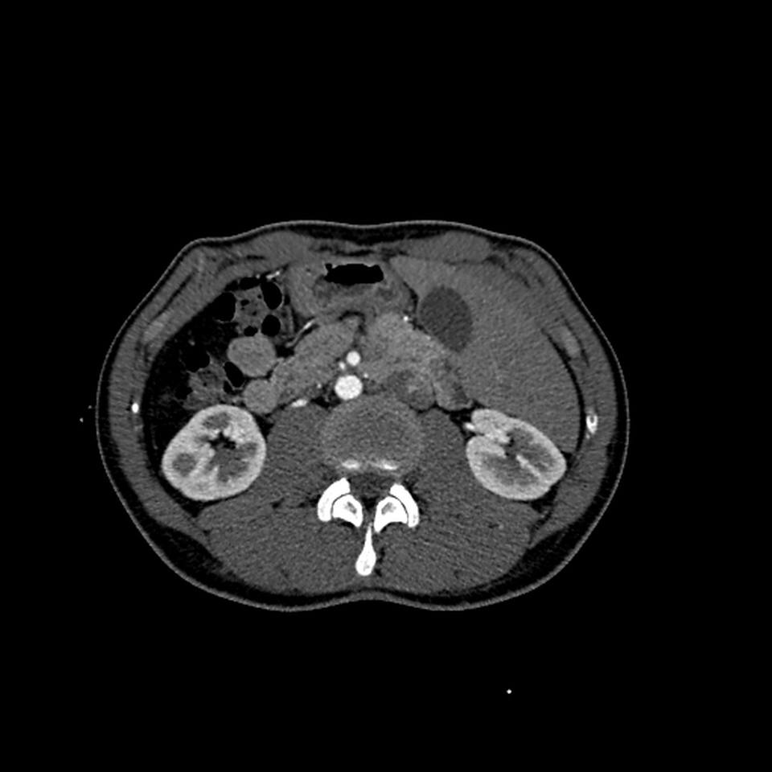

Branchseed
Navigator
A CPU-only prototype that identifies and traces (for 5-10 mm) the daughter blood vessels branching directly from the abdominal aorta in CT/CTA scans, given a binary mask that tells you where the aorta is.
Built collaboratively (in a team of 4 first-year Waterloo computer science students) for the 2026 Battle of the Schools Hackathon in 24 hours. Uses deterministic computer-vision techniques with a local review dashboard. Tested in an an evaluation environment some pretty strict time and compute requirements. 8 GB of RAM, no GPU, a 4-core CPU, and no internet access.
Won first place (healthcare track) at the Battle of the Schools Hackathon.
View repository
- Python
- NumPy
- SciPy
- SimpleITK
- Node.js